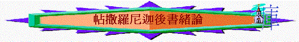

一.作者
「保羅、西拉、提摩太寫信給帖撒羅尼迦、在 神─我們的父與主耶穌基督��的教會。」帖後1:1
「我─保羅親筆問你們安。凡我的信都以此為記，我的筆跡就是這樣」3:17
∼保羅、西拉、提摩太聯名寫給教會，但實質是保羅親筆寫的
二.寫作時間與地點
「這事以後，保羅離了雅典，來到哥林多。」徒18:1
「西拉和提摩太從馬其頓來的時候，保羅為道迫切，向猶太人證明耶穌是基督。」徒18:5
∼保羅、西拉與提摩太在一起的時間，應是徒18所講在哥林多城巿時間，應是主後五十至五十一年
三.對象
「弟兄們，我們該為你們常常感謝 神，這本是合宜的；因你們的信心格外增長，並且你們眾人彼此相愛的心也都充足。甚至我們在 神的各教會��為你們誇口，都因你們在所受的一切逼迫患難中，仍舊存忍耐和信心。」1:3-4
∼仍是帖撒羅尼迦教會
∼似乎他們在保羅寫完帖前後，他們的信心、愛心，因盼望而有忍耐的心，也有增長及持守
四.問題
1.有假先知出現
「人不拘用甚麼法子，你們總不要被他誘惑；因為那日子以前，必有離道反教的事，並有那大罪人，就是沉淪之子，顯露出來。」2:3
∼保羅在帖前提及主再來的真理，不知是否這原因，有人可能趁此機會冒保羅的名寫書說主的日子近了，動搖信徒的心
2.有人逼迫教會
「神既是公義的，就必將患難報應那加患難給你們的人，」1:6
3.有人不守規矩
「弟兄們，我們奉主耶穌基督的名吩咐你們，凡有弟兄不按規矩而行，不遵守從我們所受的教訓，就當遠離他。」3:6
五.字眼
1.多「罪人」、「不法」、「不守規矩」、「不信真理」、「惡人」等違反真
理之人的字眼
「人不拘用甚麼法子，你們總不要被他誘惑；因為那日子以前，必有離道反教的事，並有那大罪人，就是沉淪之子，顯露出來。」2:3
「使一切不信真理、倒喜愛不義的人都被定罪。」2:12
「也叫我們脫離無理之惡人的手；因為人不都是有信心。但主是信實的，要堅固你們，保護你們脫離那惡者。」3:2-3
「弟兄們，我們奉主耶穌基督的名吩咐你們，凡有弟兄不按規矩而行，不遵守從我們所受的教訓，就當遠離他。」3:6
2.多「站立得穩」、「不要輕易動心」、「堅守」、「堅固」等字眼
「我勸你們：無論有靈、有言語、有冒我名的書信，說主的日子現在到了，不要輕易動心，也不要驚慌。」2:2
「所以，弟兄們，你們要站立得穩，凡所領受的教訓，不拘是我們口傳的，是信上寫的，都要堅守。」2:15
「安慰你們的心，並且在一切善行善言上堅固你們。」2:17
「但主是信實的，要堅固你們，保護你們脫離那惡者。」3:3
六.寫書目的
1.讚賞他們在信仰上的成長
「弟兄們，我們該為你們常常感謝 神，這本是合宜的；因你們的信心格外增長，並且你們眾人彼此相愛的心也都充足。」1:3
2.堅固他們：在惡人的環境下不動搖
「我勸你們：無論有靈、有言語、有冒我名的書信，說主的日子現在到了，不要輕易動心，也不要驚慌。」2:2
「所以，弟兄們，你們要站立得穩，凡所領受的教訓，不拘是我們口傳的，是信上寫的，都要堅守。」2:15
「但主是信實的，要堅固你們，保護你們脫離那惡者。」3:3
「弟兄們，你們行善不可喪志。若有人不聽從我們這信上的話，要記下他，不和他交往，叫他自覺羞愧。」3:13-14
∼當時他們面對假先知、逼迫他們的人、不守規矩的弟兄；信徒可能因此會受迷惑，或感驚慌、或會灰心喪志，保羅藉此書堅固他們無論在任何惡劣的環境及面對任何惡者，仍要站穩，堅守信仰
七.主題與大綱
在兇惡的世代中要堅守信仰
引言(1:1-2)
1.面對逼迫的人----要常存忍耐(1:3-12)
2.面對迷惑的人----要堅守真道(2:1-17)
3.面對兇惡的人----要靠主脫離(3:1-5)
4.面對悖逆的人----要主內管教(3:6-15)
結語(3:17-18)